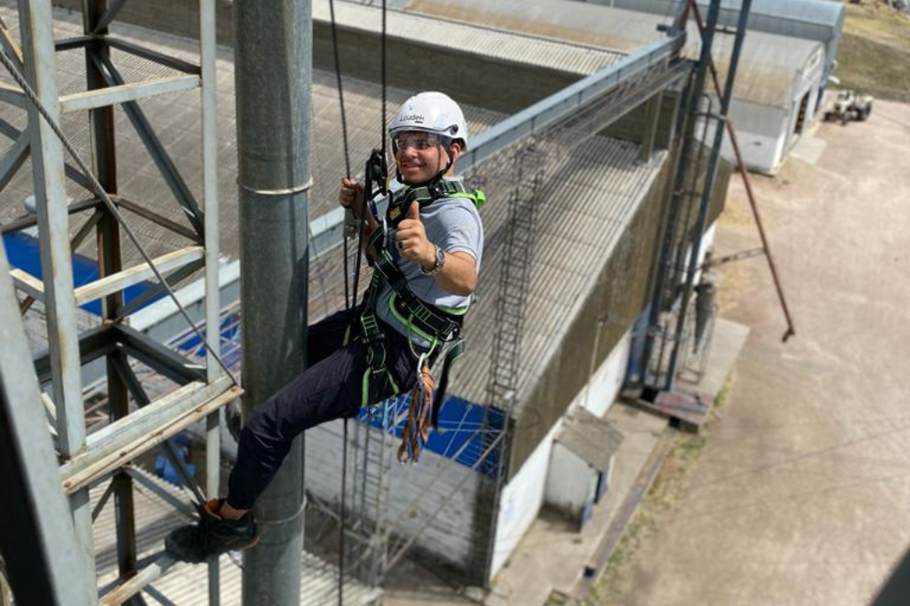

.png)
Soluciones agroindustriales
Ingeniería, consultoría y estructuras metálicas orientadas a reducir pérdidas y optimizar la producción agroindustrial en Uruguay y Argentina.
.png)
Ingeniería aplicada desde el primer día
No creemos en soluciones estándar. Cada planta de secado o acopio responde a una realidad productiva distinta. Por eso acompañamos desde el análisis inicial hasta la puesta en marcha, integrando asesoramiento técnico, provisión de equipos y montaje profesional con una visión estratégica del sistema completo.
Diseño con criterio
Evaluamos capacidad, tipo de grano y proyección futura antes de definir equipos.
Integración eficiente
Seleccionamos soluciones que funcionen como sistema, no como piezas aisladas.
Montaje especializado
Instalación profesional orientada a estabilidad y rendimiento sostenido.
Puesta en marcha técnica
Ajustes y calibraciones para garantizar operación segura y eficiente.
.png)
Soluciones integrales para cada etapa del proceso
Una planta eficiente no depende de un solo equipo, sino de la integración correcta de todos sus componentes. Desde el ingreso del camión hasta el almacenamiento final, diseñamos sistemas que priorizan continuidad operativa, seguridad y preservación del grano.
Control de ingreso
Balanzas y caladores para trazabilidad y precisión.
Movimiento interno
Norias, redlers y transportadores dimensionados correctamente.
Secado eficiente
Secadoras de flujo continuo adaptadas al volumen real.
Almacenamiento seguro
Silos y termometría para preservar calidad y valor.
.png)
Calidad que comienza antes del secado
La eficiencia del sistema no empieza en la secadora. Comienza en la limpieza. Remover impurezas de manera correcta mejora el rendimiento, protege los equipos y eleva la calidad final del producto.
Remoción efectiva
Eliminación de impurezas gruesas y finas.
Mayor rendimiento
Menor carga innecesaria en secado y transporte.
Durabilidad estructural
Equipos robustos y de mantenimiento accesible.
Producto homogéneo
Grano limpio, listo para secado o almacenamiento.
.png)
Prevenir antes que detener
La cosecha no espera. Por eso implementamos planes de mantenimiento preventivo que anticipan fallas y reducen riesgos operativos. Cuando surge un imprevisto, actuamos con rapidez y criterio técnico para minimizar tiempos de parada.
Continuidad operativa
Menos interrupciones en momentos críticos.
Optimización energética
Equipos ajustados para máximo rendimiento.
Seguridad industrial
Reducción de riesgos y mejora operativa.
Vida útil prolongada
Mayor durabilidad de motores y transportadores.
.png)
Energía estable para sistemas exigentes
Una planta agroindustrial eficiente requiere una infraestructura eléctrica diseñada con precisión. Desarrollamos instalaciones completas y mantenimiento especializado, garantizando estabilidad, seguridad y capacidad de respuesta ante altas demandas operativas.
Diseño eléctrico integral
Planificación según carga y expansión futura.
Distribución segura
Cumplimiento de normas y estándares técnicos.
Estabilidad operativa
Reducción de fallas por sobrecarga o desbalance.
Soporte especializado
Mantenimiento ágil y diagnóstico profesional.
.png)
Trabajamos con fabricantes líderes del sector:
.png)
Ingeniería Mega SA
Descarga de catálogos técnicos en PDF
.png)
.png)
.png)
Plan Recambio de Secadoras de Grano
Muchas secadoras instaladas hace más de 15 años fueron diseñadas para volúmenes de producción significativamente menores a los actuales. Hoy, estos equipos generan cuellos de botella, pérdidas de grano y mayores costos operativos. Nuestro plan recambio nos permite:
Aumentar la capacidad de secado
Reducir pérdidas y tiempos improductivos
Adaptar el sistema a la producción actual y futura
Mejorar la eficiencia energética y operativa
Consultoría agroindustrial para inversores y productores
La consultoría agroindustrial está dirigida a inversores, productores y empresas que necesitan tomar decisiones estratégicas antes de ejecutar una inversión.
Analizamos variables clave como:
- Tipo de grano
- Objetivos productivos
- Momentos de cosecha y secado
- Superficie disponible
- Proyección de crecimiento
El resultado es un anteproyecto técnico claro, sin costos ocultos y con referencias objetivas.
